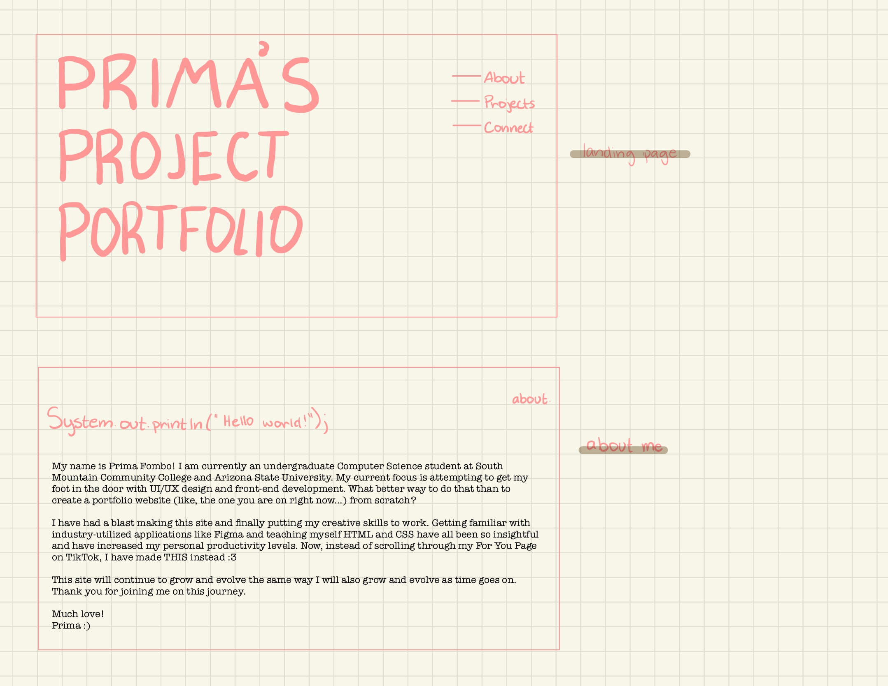
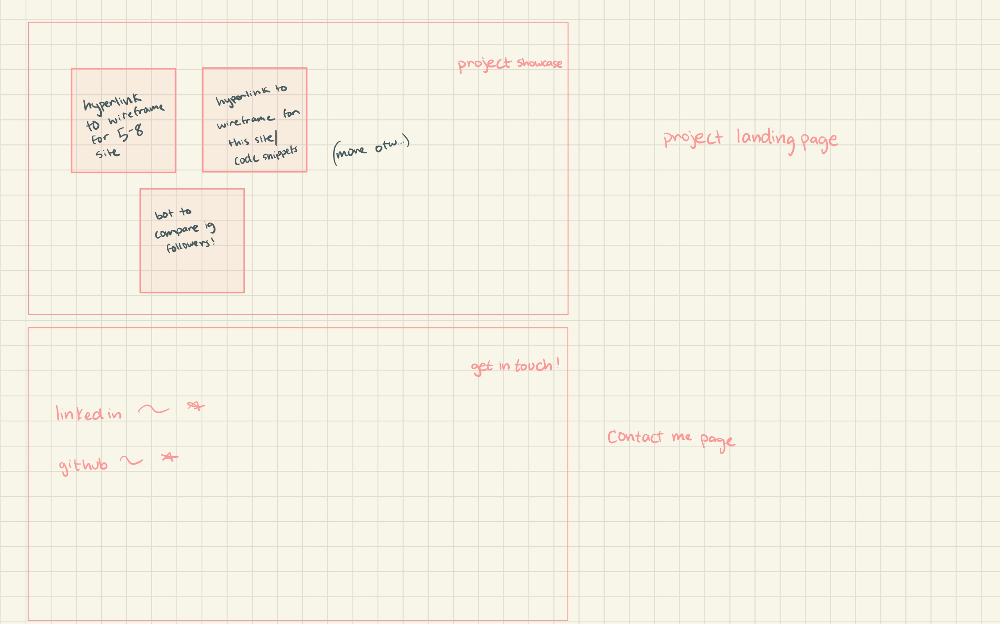
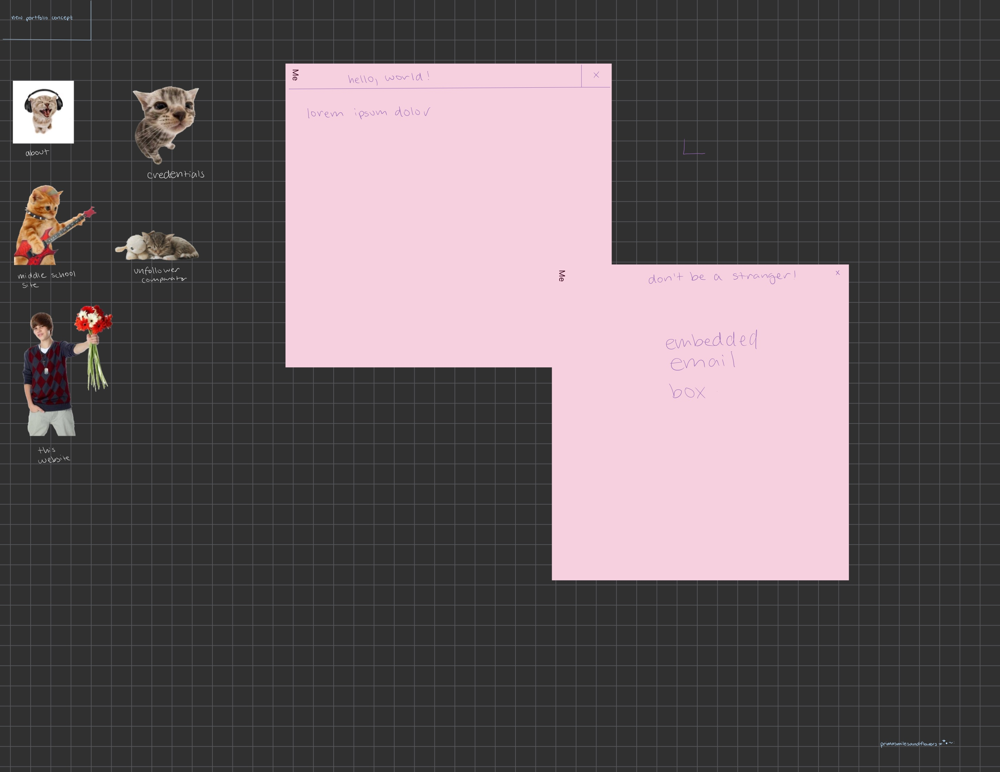

...and of course, this website
Surely I would be selling myself short if I did not include the website
that I coded to be my portfolio from the aforementioned portfolio! This
has definitely been my most fun project that I have done thus far. By
imitating a true digital design process, learning both HTML and CSS, and
honing in on my Figma skills, not only have I started a necessary
resource that I will continue to tweak for the duration of my
professional career, but have found my passion in UI/UX design and
front-end development.
Funny enough, in my opinion, the most true-to-life encounter that I faced while making this site was how it has completely morphed from what my original wireframe was. When I set out initially to make this site, I had a very specific vision: I wanted my page to be MySpace-esque, with cyber attributes. I did not know how to carry that vision out though when I first embarked on the journey to code this site. Even though this site does not technically qualify as MySpace-esque, I am still overjoyed with how it has all come together. Simply put, the computer desktop theme makes sense, considering I am a graphic information major, I adore cats, and I love the color pink.
Funny enough, in my opinion, the most true-to-life encounter that I faced while making this site was how it has completely morphed from what my original wireframe was. When I set out initially to make this site, I had a very specific vision: I wanted my page to be MySpace-esque, with cyber attributes. I did not know how to carry that vision out though when I first embarked on the journey to code this site. Even though this site does not technically qualify as MySpace-esque, I am still overjoyed with how it has all come together. Simply put, the computer desktop theme makes sense, considering I am a graphic information major, I adore cats, and I love the color pink.


